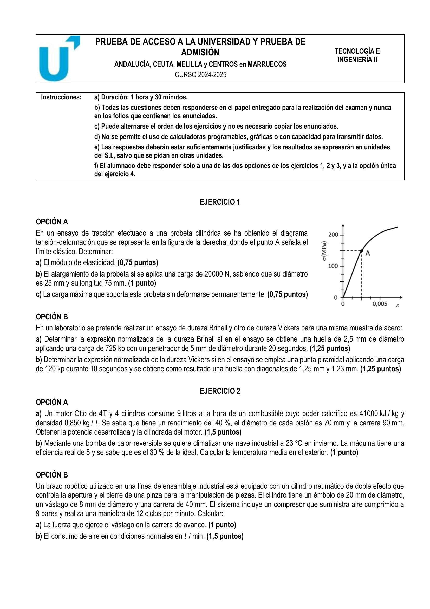
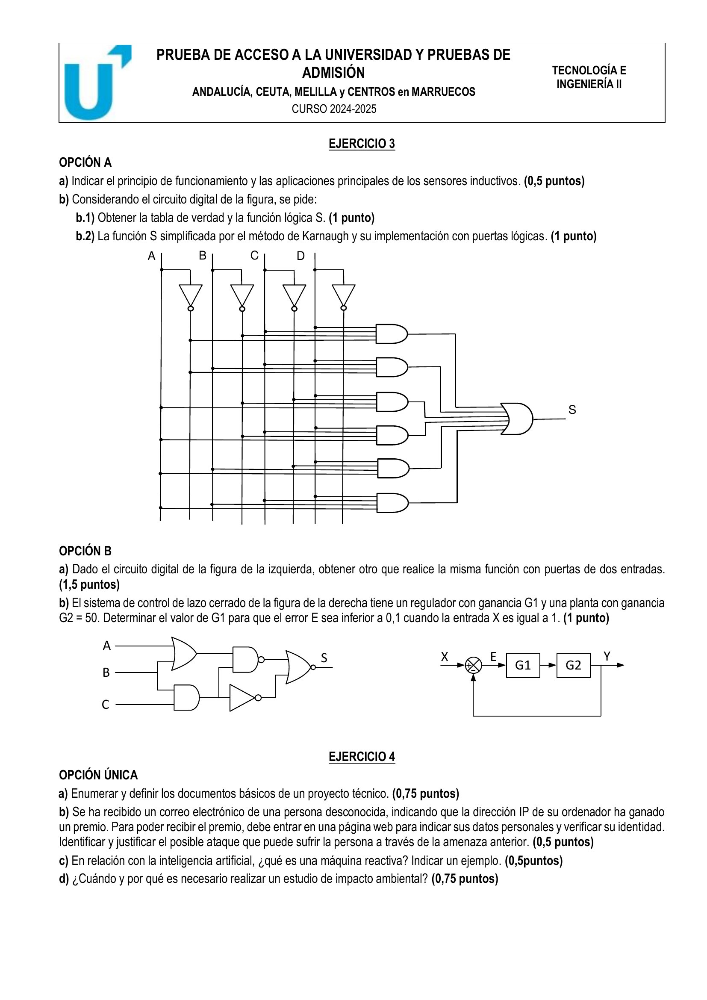

⏱️ 90 min · 4 ejercicios · 3 con opciones A/B
← Volver al índice


a) \(E = 30\ \text{GPa}\)
b) \(\sigma \approx 40{,}74\ \text{MPa}\ \cdot\ \varepsilon \approx 1{,}358\cdot 10^{-3}\ \cdot\ \Delta L \approx 0{,}102\ \text{mm}\)
c) \(F_{\text{máx}} \approx 73{,}6\ \text{kN}\)
1B-a) HB = 2·725/(π·5·(5−√(25−6,25))) ≈ 137,8 → 138 HBW 5/725/20
1B-b) d_prom = (1,25+1,23)/2 = 1,24 mm · HV = 1,854·120/1,24² ≈ 144,7 → 145 HV 120/10
2A-a) P_comb = 9·0,85·41000/3600 ≈ 87,13 kW · P_motor = 0,40·P_comb ≈ 34,85 kW · V_total = 4·π·70²/4·90 / 1000 ≈ 1385,4 cm³
2A-b) COP_ideal = 5/0,3 ≈ 16,67 = T_c/(T_c−T_f) → 16,67 = 296/(296−T_f) → T_f ≈ 278,2 K ≈ 5,2 °C
2B-a) A_émbolo = π·0,02²/4 ≈ 3,14·10⁻⁴ m² · F_av = P·A = 9·10⁵·3,14·10⁻⁴ ≈ 282,7 N
2B-b) V_ciclo_CN = (A_e+A_v)·c·(P+P_atm)/P_atm · 12 ciclos/min ≈ 2,46 l/min (con 1 atm ≈ 1,013·10⁵ Pa)
3A-a) Sensor inductivo: detecta objetos metálicos por variación de campo magnético (oscilador + bobina); aplicaciones: cintas, posicionamiento industrial
3A-b) S según el circuito: tabla de verdad con A,B,C,D; forma canónica Σm(...); simplificación por Karnaugh e implementación con puertas lógicas
3B-a) Equivalencia con puertas de 2 entradas: descomposición en cascada (AND/OR de 3 entradas → dos AND/OR de 2 entradas)
3B-b) Lazo cerrado: E = X/(1+G₁·G₂). Para X = 1 y E < 0,1 → 1+G₁·G₂ > 10 → G₁ > 9/50 = 0,18
a) Documentos básicos de un proyecto técnico: memoria, planos, pliego de condiciones, presupuesto, anexos
b) Phishing: suplantación para obtener datos personales/bancarios mediante mensajes fraudulentos; no facilitar datos desde enlaces no verificados
c) Máquina reactiva: IA que responde a estímulos sin memoria histórica (ej. Deep Blue)
d) Estudio de impacto ambiental: necesario cuando un proyecto puede afectar al medio; identifica, previene y mitiga efectos